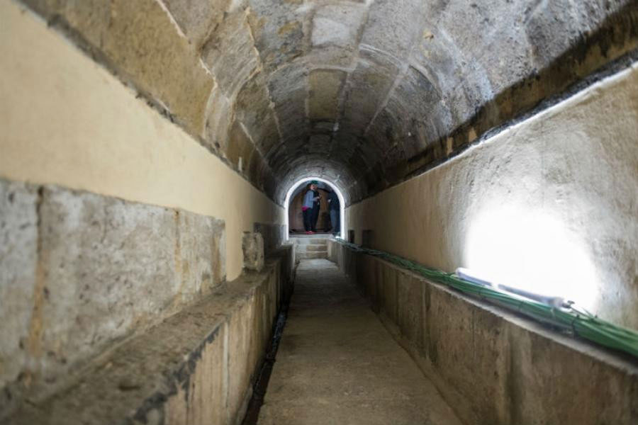

Uma nova faceta de Lisboa revela-se num troço subterrâneo até agora conhecido por poucos. A Galeria do Loreto está aberta ao público.
À superfície, a cidade, luminosa e ampla. Debaixo de terra, caminhos, galerias e túneis que contam outra história de Lisboa. É este ‘outro lado’ que se dá a conhecer nos novos percursos inaugurados pela EPAL.
São mais de 260 anos de história contados através de túneis e galerias que coexistem com a cidade. Um novo percurso subterrâneo, com cerca de 1,6 km entre a Rua das Amoreiras e o Miradouro de São Pedro de Alcântara, em Lisboa, acaba de abrir ao público para revelar um pouco da cidade escondida debaixo dos pés, em caminhos que percorrem a cidade de Lisboa debaixo de terra.
Construído em 1746, o troço do Aqueduto das Águas Livres reabriu ao público a 17 abril com mais 1,2 Km, desde a Rua das Amoreiras até ao Reservatório da Patriarcal (Príncipe Real), do percurso que era até então visitável (400 metros que faziam a ligação entre o Príncipe Real e o Miradouro de São Pedro de Alcântara/Rua do Século).

A Galeria do Loreto inicia o seu percurso na Casa do Registo, na Mãe d’Água das Amoreiras, e desce até ao Largo do Rato, passando pela Rua da Escola Politécnica e fazendo uma paragem obrigatória no Reservatório da Patriarcal, no Príncipe Real, onde é possível viajar até ao século XIX, espaço onde é apresentada uma outra fase do sistema de distribuição de água. É este o caminho, com cerca de 1200 metros, que abriu recentemente ao público, no âmbito do projeto de requalificação dos espaços patrimoniais, relacionados com o percurso da água em Lisboa, que tem sido levado a cabo pela EPAL, através do Museu da Água.
Este novo troço pertence a uma galeria com uma extensão total de 2,8 km, que termina no Largo de São Carlos e outrora abastecia os chafarizes do Carmo, do Loreto, de S. Pedro de Alcântara, da Praça da Alegria e dos Carvalhos, na Rua do Século. Era também através desta Galeria que se abastecia a Real Fábrica do Rato, o Colégio dos Nobres, o Palácio dos Carvalhos, o Convento dos Cardais e diversas casas nobres.
As visitas guiadas à Galeria subterrânea do Loreto, entre a Rua das Amoreiras e o Miradouro de São Pedro de Alcântara, podem ser feitas todas as sextas-feiras (pelas 15h00) e últimos sábados de cada mês (11h00), através de marcação prévia obrigatória que pode ser feita através do Tel. 218 100 215 ou do email: mda@epal.pt.
A visita custa entre €3 e €5.